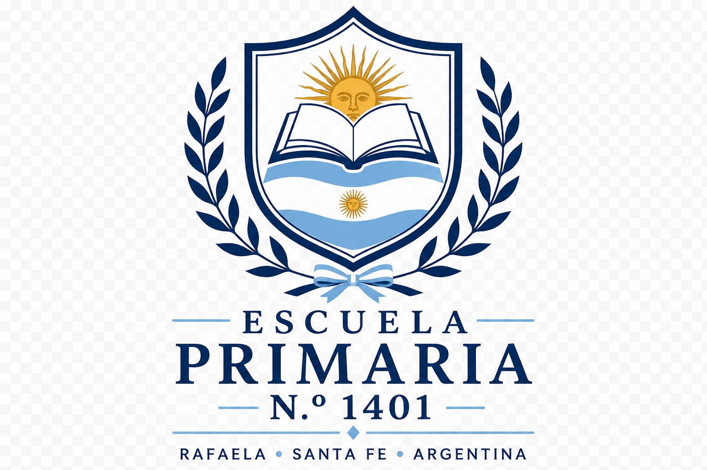
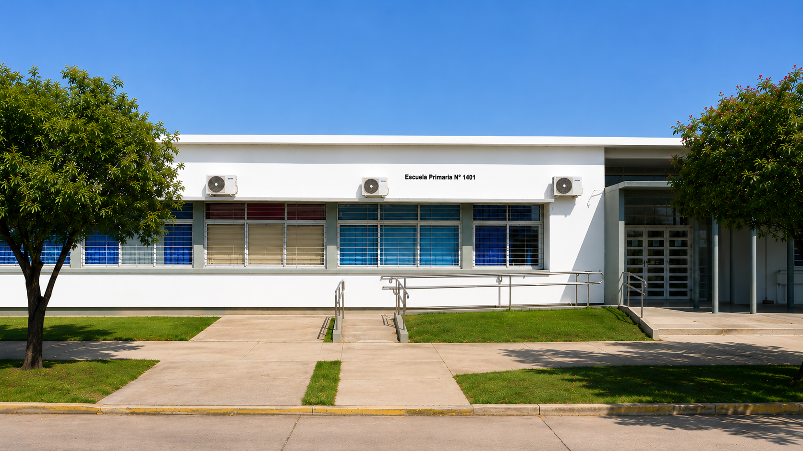
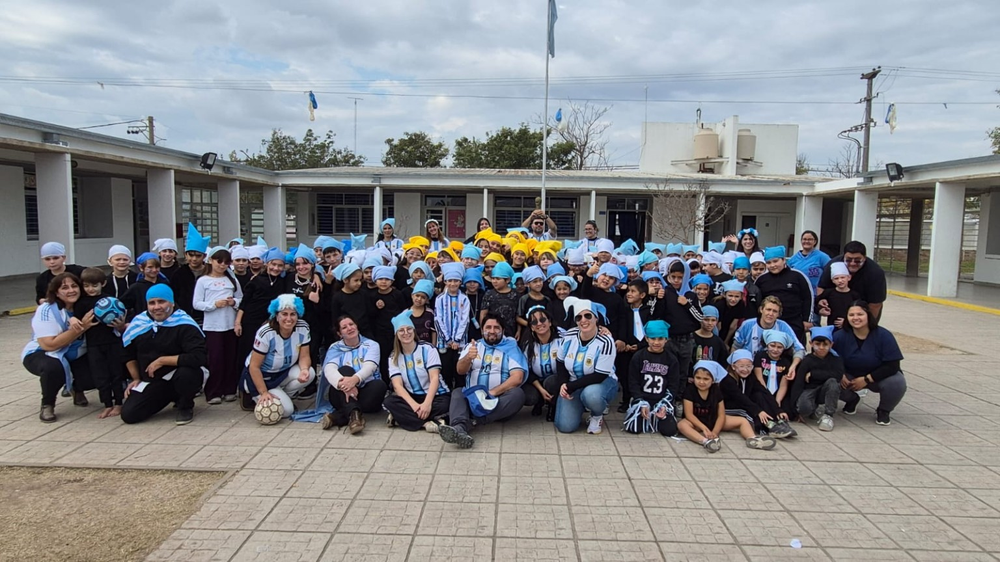
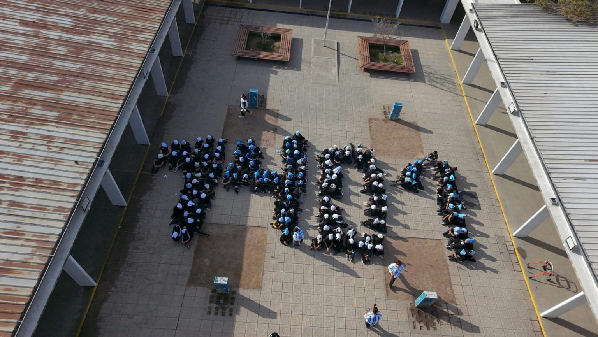

Aprender, crecer y soñar juntos
Rafaela - Santa Fe - Argentina
Un espacio donde aprender, crecer y soñar juntos forma parte de nuestra identidad.
La Escuela Primaria N.º 1401 fue creada el 29 de febrero de 2016 y brinda educación primaria en turno mañana y turno tarde.
Ubicada en Rafaela, Santa Fe, trabaja diariamente promoviendo valores, inclusión y participación.
La Cooperadora acompaña y colabora activamente con el crecimiento de nuestra institución.
Frente de la Escuela Primaria N.º 1401

Comunidad educativa

Formación 1401
La comunidad educativa participó de diversas actividades para conmemorar el décimo aniversario de nuestra institución.
Los alumnos trabajan en propuestas vinculadas a la Selección Argentina y al próximo Mundial.
Los estudiantes continúan desarrollando habilidades digitales mediante proyectos de informática y tecnología.
Dirección: Muniagurria 58, Rafaela
Provincia: Santa Fe
País: Argentina